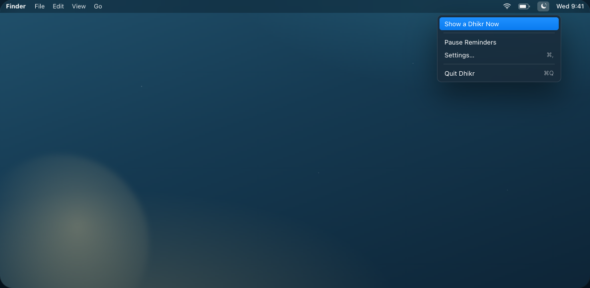
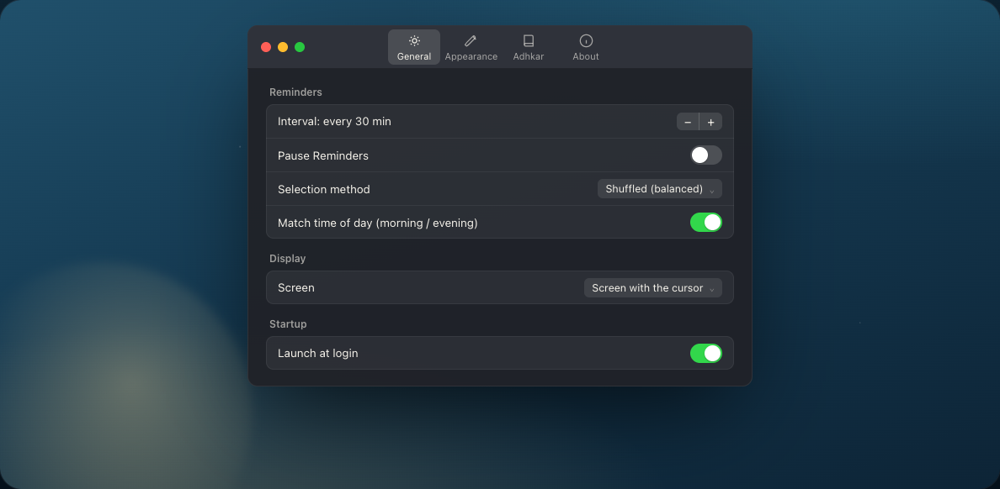
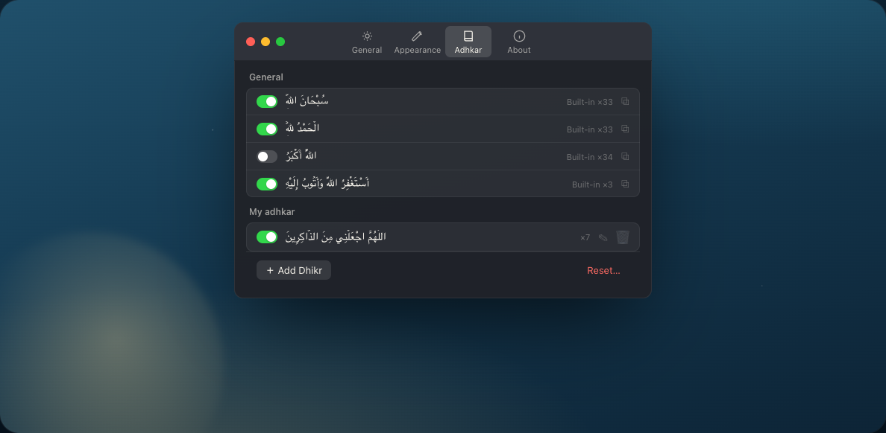
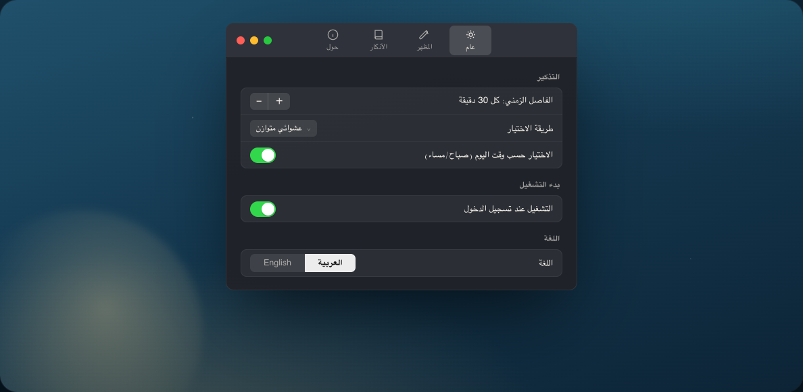

Lives in the menu bar
A crescent sits quietly beside the clock. Show one now, pause reminders when you need silence, or open settings — no Dock icon, nothing to manage.

Dhikr slips a single dhikr into the corner of your screen at the interval you choose — then lets it fade on its own. No window to manage, no notification to clear.
Free · universal .dmg · macOS 14 Sonoma or later
Turn on time-of-day matching and Dhikr leans toward morning remembrances after Fajr, and evening ones as Maghrib nears — the right words at the right hour, without you thinking about it.
أَصْبَحْنَا وَأَصْبَحَ الْمُلْكُ لِلَّهِ
“We have entered the morning and the dominion belongs to Allah.” — adhkar of the morning
أَمْسَيْنَا وَأَمْسَى الْمُلْكُ لِلَّهِ
“We have entered the evening and the dominion belongs to Allah.” — adhkar of the evening
Everything lives in one small menu-bar app — no Dock icon, no window to keep. Set it once and let it become part of the room.
A crescent sits quietly beside the clock. Show one now, pause reminders when you need silence, or open settings — no Dock icon, nothing to manage.

سُبْحَانَ اللَّهِ
Every 15, 30, 60, or 120 minutes — or any interval from 1 to 240. Balanced shuffle so nothing repeats too soon, and a soft chime if you want one.

A built-in collection drawn from established tradition — each with transliteration, translation, and source. Enable what speaks to you, edit any of them, or add your own.

Pick which corner it appears in, how long it lingers, the font size, and which display on a multi-monitor desk.
Launch quietly when you start your Mac. It's simply present — never asking for attention.
Each remembrance carries its attribution — متفق عليه, Sahih Muslim, al-Bukhari — so you always know where it comes from.
Dhikr has no network connection at all. No data collection of any kind — your remembrances and settings stay on your device, and only your device.
A fully right-to-left Arabic interface, or English — switch the whole app in a tap. Transliteration and translation are yours to toggle, so a card shows exactly what you want and nothing more.

Download Dhikr and let a gentle dhikr find you, corner by corner, through the day.
Download for macOSFree · universal .dmg · macOS 14 Sonoma or later · © 2026 Haitham Assoli